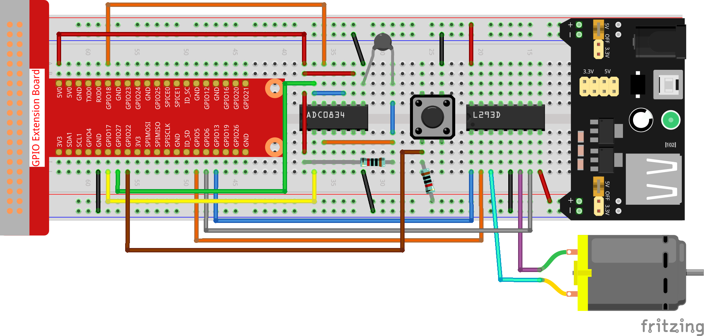

Note
Bonjour et bienvenue dans la communauté des passionnés de SunFounder Raspberry Pi, Arduino et ESP32 sur Facebook ! Plongez dans l’univers de Raspberry Pi, Arduino et ESP32 avec d’autres passionnés.
Pourquoi nous rejoindre ?
Support d’experts : Résolvez les problèmes après-vente et relevez vos défis techniques grâce à l’aide de notre communauté et de notre équipe.
Apprenez et Partagez : Échangez des astuces et des tutoriels pour perfectionner vos compétences.
Aperçus exclusifs : Bénéficiez d’un accès anticipé aux nouvelles annonces de produits et aux avant-premières.
Réductions spéciales : Profitez de réductions exclusives sur nos nouveaux produits.
Promotions festives et concours : Participez à des concours et à des promotions lors des fêtes.
👉 Prêt à explorer et à créer avec nous ? Cliquez sur [Ici] et rejoignez-nous dès aujourd’hui !
3.1.4 Ventilateur Intelligent
Introduction
Dans ce cours, nous allons utiliser des moteurs, des boutons et des thermistances pour créer un ventilateur intelligent, manuel et automatique, dont la vitesse du vent est réglable.
Composants

Schéma de câblage
T-Board Name |
physical |
wiringPi |
BCM |
GPIO17 |
Pin 11 |
0 |
17 |
GPIO18 |
Pin 12 |
1 |
18 |
GPIO27 |
Pin 13 |
2 |
27 |
GPIO22 |
Pin 15 |
3 |
22 |
GPIO5 |
Pin 29 |
21 |
5 |
GPIO6 |
Pin 31 |
22 |
6 |
GPIO13 |
Pin 33 |
23 |
13 |

Procédures expérimentales
Étape 1 : Construisez le circuit.
{kind=link}
Note
Le module d’alimentation peut utiliser une pile de 9V avec le connecteur de pile 9V fourni dans le kit. Insérez le capuchon du cavalier du module d’alimentation dans les bandes de bus 5V de la breadboard.

Pour les utilisateurs du langage C
Étape 2 : Accédez au dossier du code.
cd ~/davinci-kit-for-raspberry-pi/c/3.1.4/
Étape 3 : Compilez.
gcc 3.1.4_SmartFan.c -lwiringPi -lm
Étape 4 : Exécutez le fichier exécutable ci-dessus.
sudo ./a.out
Lorsque le code s’exécute, démarrez le ventilateur en appuyant sur le bouton. À chaque pression, le niveau de vitesse augmente ou diminue de 1. Il y a 5 niveaux de vitesse : 0~4. Lorsqu’il est réglé sur le 4ème niveau de vitesse et que vous appuyez sur le bouton, le ventilateur s’arrête avec une vitesse de vent à 0.
Note
Si cela ne fonctionne pas après l’exécution, ou s’il y a un message d’erreur indiquant : « wiringPi.h : Aucun fichier ou répertoire de ce type », veuillez consulter C code is not working?.
Dès que la température augmente ou diminue de plus de 2℃, la vitesse se règle automatiquement d’un niveau plus rapide ou plus lent.
Explication du Code
int temperture(){
unsigned char analogVal;
double Vr, Rt, temp, cel, Fah;
analogVal = get_ADC_Result(0);
Vr = 5 * (double)(analogVal) / 255;
Rt = 10000 * (double)(Vr) / (5 - (double)(Vr));
temp = 1 / (((log(Rt/10000)) / 3950)+(1 / (273.15 + 25)));
cel = temp - 273.15;
Fah = cel * 1.8 +32;
int t=cel;
return t;
}
La fonction temperature() convertit les valeurs de la thermistance lues par l’ADC0834 en valeurs de température. Pour plus de détails, consultez 2.2.2 Thermistor.
int motor(int level){
if(level==0){
digitalWrite(MotorEnable,LOW);
return 0;
}
if (level>=4){
level =4;
}
digitalWrite(MotorEnable,HIGH);
softPwmWrite(MotorPin1, level*25);
return level;
}
Cette fonction contrôle la vitesse de rotation du moteur. La plage de niveaux Level est de 0 à 4 (le niveau 0 arrête le moteur). Chaque niveau correspond à un changement de 25% de la vitesse du ventilateur.
int main(void)
{
setup();
int currentState,lastState=0;
int level = 0;
int currentTemp,markTemp=0;
while(1){
currentState=digitalRead(BtnPin);
currentTemp=temperture();
if (currentTemp<=0){continue;}
if (currentState==1&&lastState==0){
level=(level+1)%5;
markTemp=currentTemp;
delay(500);
}
lastState=currentState;
if (level!=0){
if (currentTemp-markTemp<=-2){
level=level-1;
markTemp=currentTemp;
}
if (currentTemp-markTemp>=2){
level=level+1;
markTemp=currentTemp;
}
}
level=motor(level);
}
return 0;
}
La fonction main() contient l’ensemble du processus du programme comme suit :
Lire en continu l’état du bouton et la température actuelle.
À chaque pression, le niveau de vitesse (level) augmente de +1 et la température est mise à jour. Le Level varie de 1 à 4.
Lorsque le ventilateur fonctionne (niveau différent de 0), la température est surveillée. Une variation de +2℃ ou plus entraîne une modification du niveau.
Le moteur ajuste la vitesse de rotation en fonction du Level.